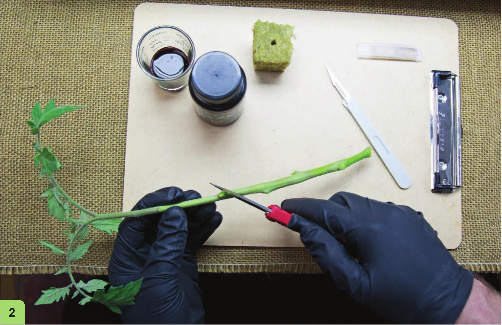

1 Rinse and prepare the stone wool with half-strength nutrient solution. Place it in the solid bottom tray. With sharp pruners, collect cuttings (see the Collecting Cuttings guide on page 141). 2 Shorten the cuttings to 4" to 7", making a 45-degree cut below an internode. (Optional) Some growers prefer to make a horizontal cut and then split the bottom of the stem, some growers prefer just a 45-degree cut, and some growers prefer to do both a 45-degree cut and split the stem. (Optional) Some growers remove a thin layer from one side of the cutting to expose more cambium, a white layer inside the stem from which new roots emerge. (Optional) Rooting hormone can be very helpful when rooting challenging crops. Some gardeners use honey instead of a rooting gel. STARTING SEEDS AND CUTTINGS 143
